Read this first
The walkthrough runs Operations → Stock → Accounts → Maintenance, which is how the work flows day to day. On a fresh install the dependency runs the other way: a tax code has to exist before an invoice can charge GST, and a warehouse before stock can be received. The demo seed already creates all of it, so you can start at stage 1 — but if you wipe the database and start clean, do stage 4 first.
Two gates sit in front of everything. Module Control (Company Setup) switches whole modules on and off per company, and Group Authority grants VIEW / EDIT / FULL within each one. If a menu entry is missing, it is one of those two — not a bug. The owner account bypasses Module Control by design, so test permission behaviour with a non-owner.
Signing in
Three minutes to get oriented. Every screen below is the real application running against the demo seed — what you see on your test server should match, allowing for your own data.
-
Sign in/
The login page carries the platform announcements and the promo banner — both come from Maintenance › Announcements & Ad Banner, and both render before any company is chosen.
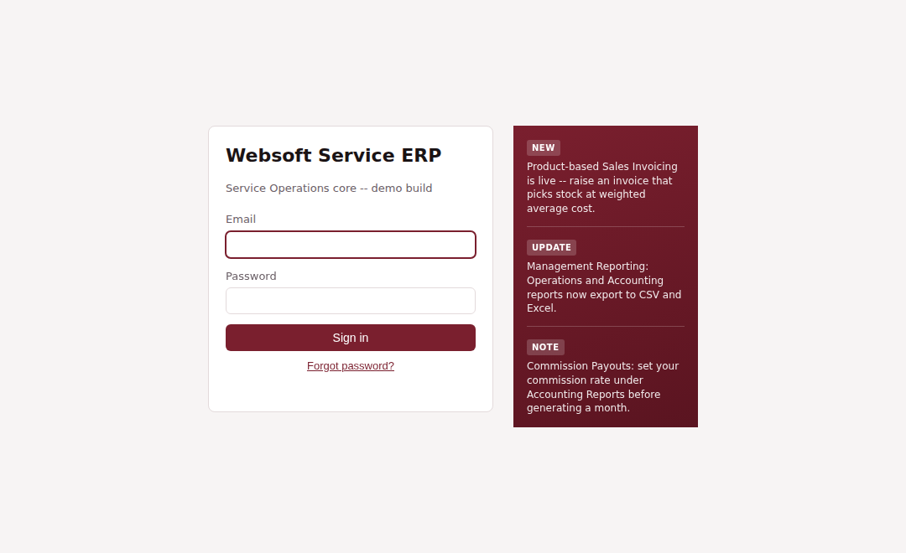
Login. Email and password, with a one-time code option, and the platform announcements beside them. Both fields start empty and the cursor lands in Email; a password manager can fill them. Five wrong passwords locks the account for 15 minutes — the same policy applies to customer portal logins. dennis@websoft.exampledemo1234 -
Open the main menu☰ Menu, top left
The sidebar is hidden by default and peeks out on demand, so a wide screen gives the working area to the data. Four sections, in the order the business uses them.
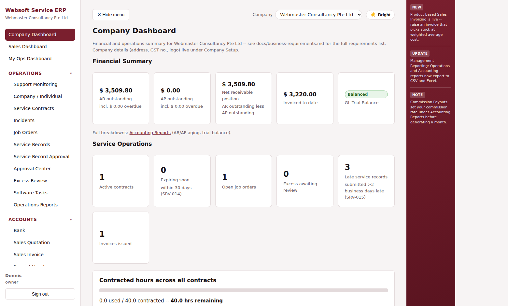
The menu. Three dashboards at the top, then Operations, Accounts, Stock Inventory and Maintenance. Sections collapse, and entries can be dragged to reorder. A missing entry means Module Control or Group Authority, not a bug. -
Read the Company DashboardCompany Dashboard
The landing page. Every tile is a real query — none is a placeholder — and each aggregates through the service that owns the figure, so a tile can never disagree with the screen behind it.
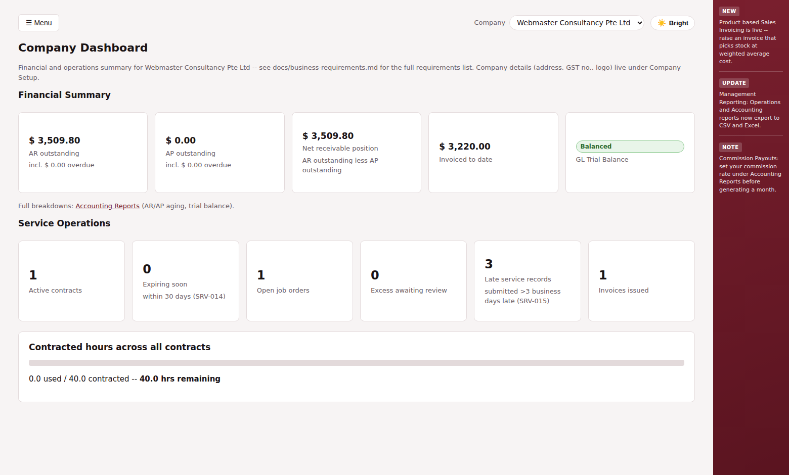
Company Dashboard. Financial summary across the top — including whether the GL trial balance balances — then service operations: active contracts, contracts expiring within the SRV-014 window, open job orders, excess awaiting review, and SRV-015 late service records. Expect: this page is deliberately ungated by Module Control — it is the one screen everybody lands on.
Operations
The service business end to end: who the customer is, what they bought, the work done against it, and what happens when the work exceeds what they bought. Every step here feeds the invoice you will raise in stage 3.
-
Create a Company / IndividualOperations › Company / Individual
The customer and supplier master, one record for both roles. Set Is customer, and set Is supplier too if you want to raise purchase orders against them later. Give it payment terms — that is what sets an invoice's due date.
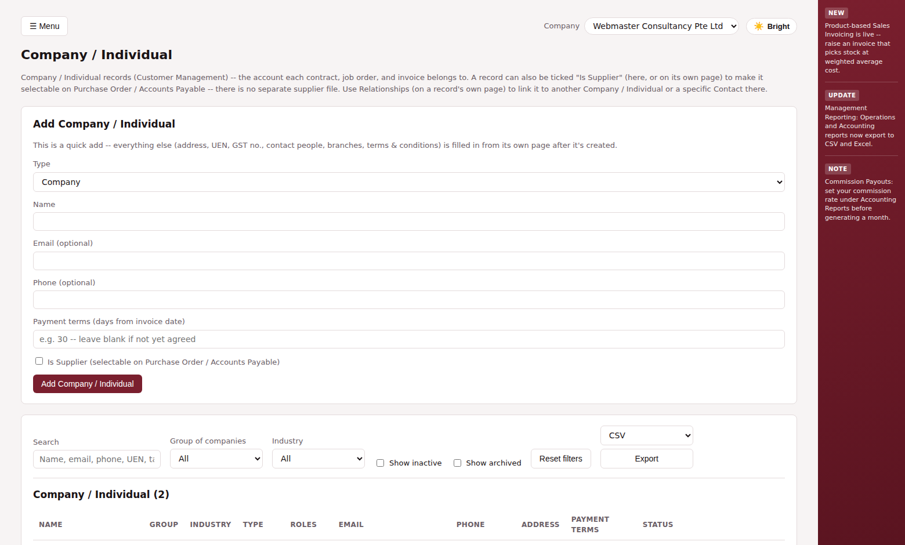
Company / Individual. One master for customers and suppliers — the flags decide which role a record plays. Free-text search runs across name, email, phone, UEN, legacy code and tags. Expect: tabs for Contacts, Branches and Relationships, and a PDPA consent control. Consent gates the Customer Portal login, so record it if you plan to test the portal.
-
Raise a Service ContractOperations › Service Contracts
Pick the customer, a contract kind, contracted hours and a value. Contract kinds behave differently: Service Support carries hours, Annual carries a value, Ad Hoc carries neither upfront.
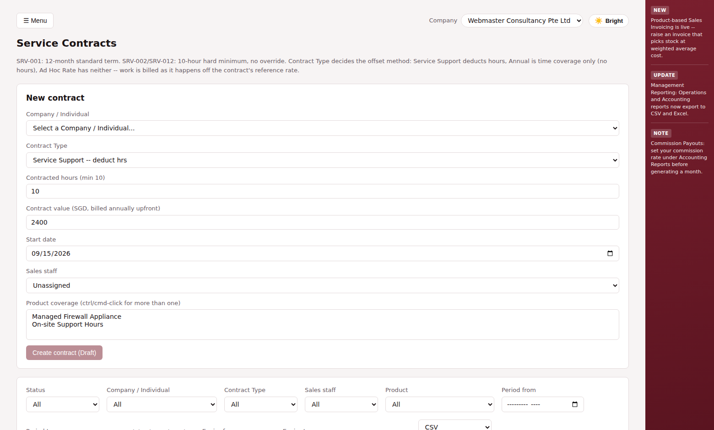
Service Contracts. Contracted, consumed and remaining hours are shown per contract. The remaining-hours and expiry-date filters on this list drive the renewal conversation. SRV-002 / 012Minimum 10 contracted hours, and there is no override — try 5 and it is refused.SRV-001Standard duration is 12 months. -
Activate the contractContract detail
Activation is the accounting event, not creation.
BILL-001Activating an Annual contract issues its full 12-month invoice immediately, and that invoice posts to the General Ledger in the same step. Ad Hoc issues nothing — there is no upfront value to bill.Expect: a new invoice under Accounts › Sales Invoice, already showing posted with a GL voucher number.
-
Add hour-sharing customersContract detail
A contract keeps its own list of other companies allowed to draw on its hours — a parent company buying hours its subsidiaries consume. Opening a Job Order against the contract for a customer not on that list is refused.
-
Log an IncidentOperations › Incidents
The Helpdesk front door — an incoming call or email before anyone has decided what it is. Enter a customer email and it matches the Company / Individual automatically.
Expect: Convert buttons for Job Order, Sales Quotation and Software Task. Each creates the real record with a back-reference, not just a routing flag.
-
Convert the Incident to a Job OrderIncident detail
Conversion needs a valid contract. Pick products on the Job Order and each one imports its Job Implementation Template — an ordered task checklist, deduped by name across products.
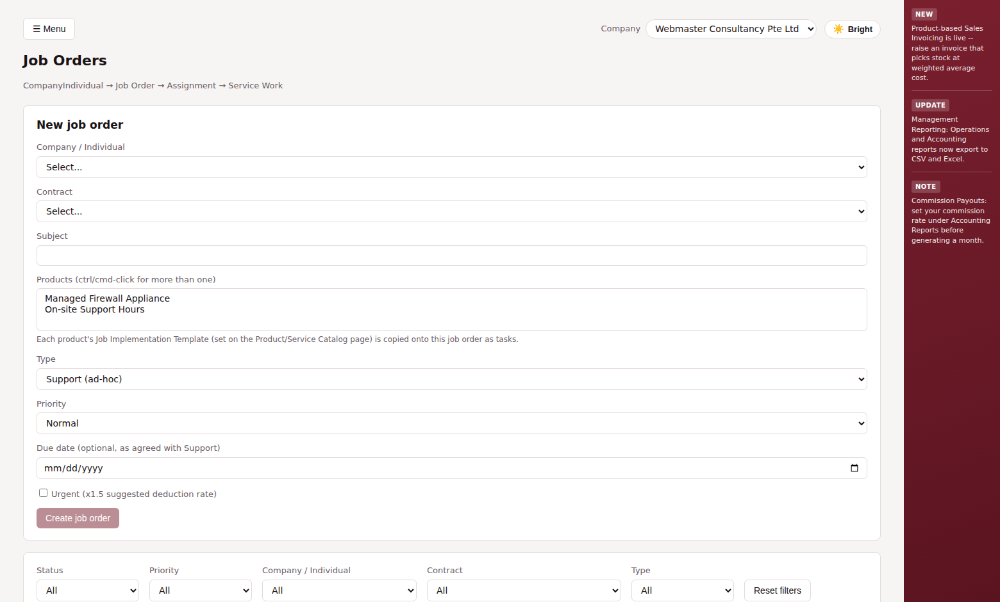
Job Orders. Numbered JO-2026-nnnn, against a customer and a contract. Budget overrun is computed live from approved service records, not stored. Expect: the Job Order numbered JO-2026-nnnn, with imported tasks. Ticking a task off is restricted to Sales Manager or Owner.
-
Submit a Service RecordOperations › Service Records
The engineer's record of work done. Enter raw minutes, mark whether the visit completed the job, and whether it was after hours.
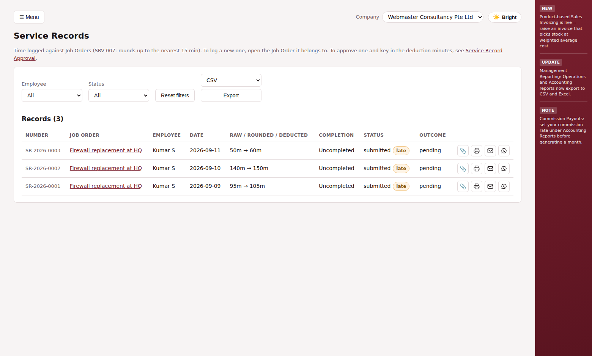
Service Records. Raw minutes as keyed, rounded minutes as deducted — the difference is SRV-007 rounding up to the next 15 minutes. SRV-007Hours round up to the nearest 15 minutes before deduction — key 23 minutes and 30 is deducted.SRV-015Records are due within 3 business days. A later one is flagged late, and stays visible as late. -
Approve itOperations › Service Record Approval
The approver keys the deduction themselves; the form offers a suggested multiplier (after-hours work costs the contract more) but never enforces it. Approving splits the time between what the contract absorbs and what becomes excess.
SRV-003No grace period. Once contracted hours are gone, further time is excess — it does not quietly overdraw.Expect: if the record completed the job, the Job Order auto-closes. Contract remaining hours drop on the contract detail page.
-
Decide an Excess Usage recordOperations › Excess Review
Anything beyond the contract lands here undecided. Choose a treatment — Billable, Approved non-billable, Warranty / goodwill, Internal write-off, or Other — always with a reason.
SRV-008A Billable decision issues its own invoice at the contract's blended rate (contract value ÷ contracted hours), and posts to the GL.Expect: reviewers are limited to Service Lead, Sales Manager and Owner. The reason is recorded to Event Logs.
-
Check the operational reportsOperations › Operations Reports
Four reports — Contracts, Job Orders, Service Records, and Company / Individual Product Usage — each with CSV and Excel export. Also here: the Contract Expiry and Renewal Due listings.
SRV-014The Renewal Due listing reuses the pre-expiry window exactly, so it can never disagree with the flag on the contract itself.Expect: an export returns what is on screen — apply a filter, export, and the excluded rows are absent from the file. Every export is written to Event Logs with its row count.
-
Try the Mobile Web App/mobile
The engineer's view: their own Job Orders only, time in / time out instead of keyed minutes, work photos and videos, and customer sign-off with a watermarked chop photo.
-
Try the Customer Portal/portal
Enable a contact's portal login from the Company / Individual page (PDPA consent must be recorded first). The customer sees only their own contracts, hour balance, job orders, service records, invoices and payments, and can raise an Incident that lands in the staff queue.
Expect: a separate auth realm. A staff token is refused by every portal endpoint and vice versa; another customer's document id returns 404, never 403.
Stock Inventory
Six movement types, one valuation rule. Everything here is quantity and cost, and the two are never allowed to disagree — which is what the last two steps are for.
-
Set up the stock mastersMaintenance › Warehouses, Categories, Groups, Brands / Models, Usages
Five small tables behind the stock item. At minimum you need one warehouse before anything can be received.
Expect: Activate / Deactivate works on Warehouses and Stock Items — it never did against the old Python backend.
-
Create a Stock ItemStock Inventory › Stock Master
Code, name, unit of measure, reorder level, and the extended fields — barcode, part number, invoice description, memo, dimensions. Link it to a catalogue Product so a Sales Invoice can find it. Picture and document attachments live here too.
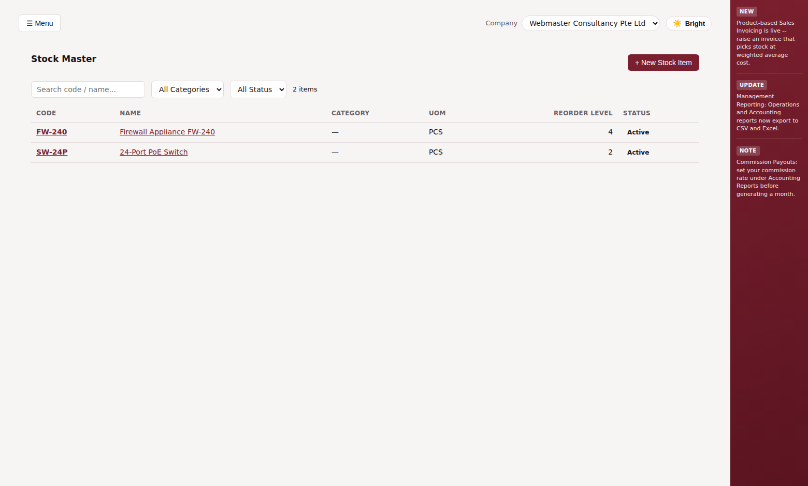
Stock Master. The item list. Open an item for its extended fields, per-warehouse levels, and the Avg Cost and Cost Value that every movement maintains. Expect: Avg Cost and Cost Value on the item, both zero until the first receipt. Stock levels are shown per warehouse, read-only — levels move only through documents.
-
Receive stock — GRNStock Inventory › Goods Receive
Receive 10 units at $10.00. Then receive 10 more at $20.00.
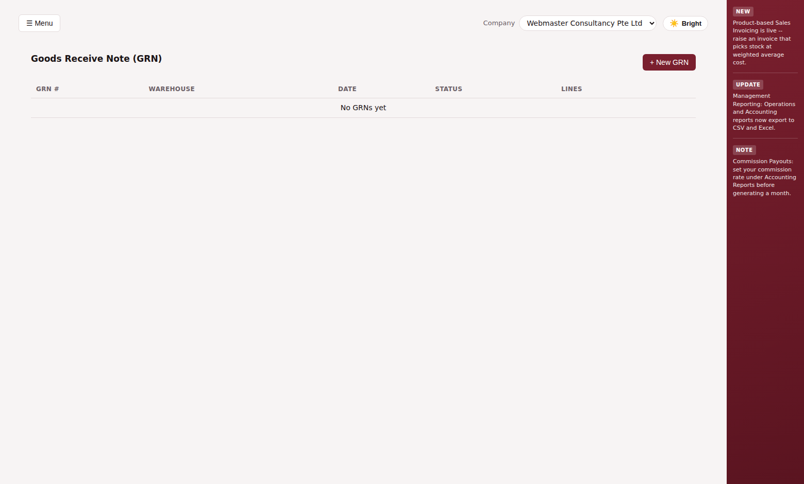
Goods Receive. The only document that re-weights the average. Receive 10 at $10.00 then 10 at $20.00 and the item settles at $15.0000. INV-002Weighted average: after the second receipt the item's average is $15.0000, not $20. Only a receipt re-weights it.Expect: Avg Cost and Cost Value both update on the item, and each movement records the quantity, average and cost value after it — so any recalculation can be tallied back.
-
Transfer between warehouses — GTNStock Inventory › Goods Transfer
Move 5 units to a second warehouse.
INV-002A transfer moves quantity only. It carries the source warehouse's cost across rather than revaluing — the item's average is unchanged afterwards. -
Return to supplier — GRTNStock Inventory › Goods Return
Stock leaving the building back to where it came from.
-
Raise a Stock Adjustment and leave it in draftStock Inventory › Stock Adjustment
For discrepancy, damage or loss. Raise one, then check the stock level before approving it.
INV-001An adjustment moves nothing until it is approved. A draft or rejected one provably never touches a stock level. -
Sell stock on a Sales InvoiceAccounts › Sales Invoice › Raise Sales Invoice
This is the join between stock and accounting. Pick a catalogue product and the linked stock item is selected for you; choose a warehouse and the form shows on-hand quantity as you type.
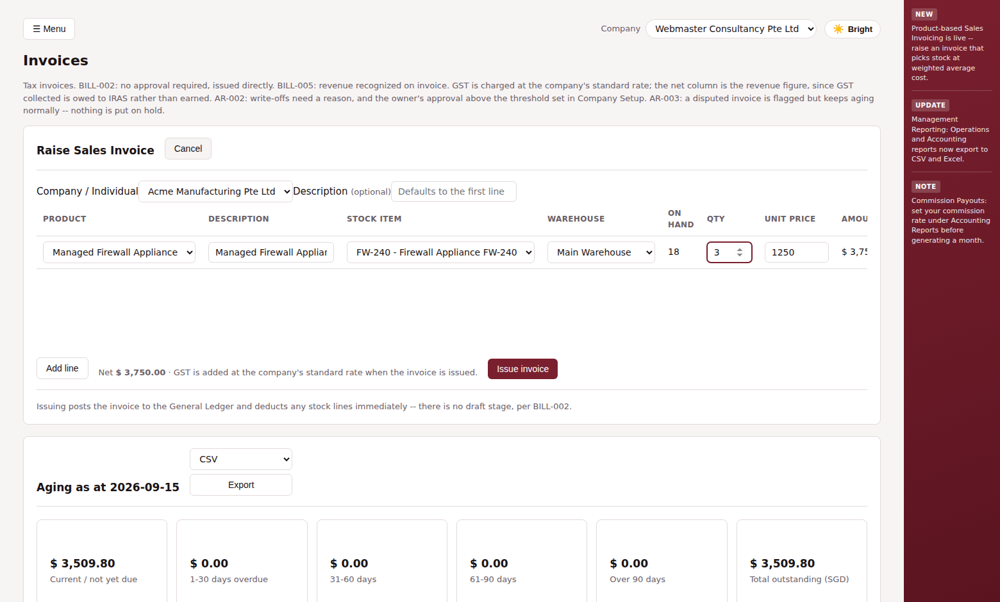
Raise Sales Invoice. Choosing the product auto-selects its linked stock item; choosing the warehouse fills in On hand — here 18 — so the refusal is visible before you submit, not only afterwards as a 422. Expect: issuing deducts the stock at the item's weighted average, and the line stores that average as at issue — so a later receipt re-weighting the item cannot move this invoice's gross profit.
-
Now try to over-sell itRaise Sales Invoice
Ask for more units than the warehouse holds, and submit.
INV-002Refused outright — Insufficient stock: have 6, need 99. The whole invoice is refused, never partly issued, and on-hand quantity can never go negative.Expect: add a second line that can be filled plus one that cannot. Neither deducts — the refusal unwinds the earlier line with it.
-
Read the stock reportsStock Inventory › Stock Reports
Valuation (quantity × weighted average), reorder alert, and the movements journal. These sit on their own module key, so a manager can be given the reports without any right to move stock.
Expect: the movements journal in true chronological order, including same-second movements — a transfer's receipt can never appear above the receipt that funded it.
| Movement | Raised by | Quantity | Effect on average cost |
|---|---|---|---|
| Receive | Goods Receive Note | + | Re-weights the average |
| Transfer out / in | Goods Transfer Note | − then + | None — cost carries across |
| Return out | Goods Return Note | − | None |
| Adjustment | Stock Adjustment (once approved) | ± | None |
| Issue | Goods Issue Note · Sales Invoice line | − | None — leaves at the average |
Accounts
Sales one way, purchases the other, both landing in the same double-entry ledger. Nothing here is ever deleted — a mistake is corrected by a reversal that leaves both the error and the fix on record.
-
Quote, then convertAccounts › Sales Quotation
Build a quotation with lines, send it, and accept it. Acceptance converts it to contracts automatically — lines measured in Hours sum into one Service Support contract, everything else into one Annual contract.
Expect: a quotation mixing both produces two contracts, never one blended one.
-
Review the Sales Invoice listAccounts › Sales Invoice
By now it holds the contract-activation invoice, the excess-usage invoice, and the stock invoice you raised in stage 2. Each shows its GST, its outstanding balance and its GL status.
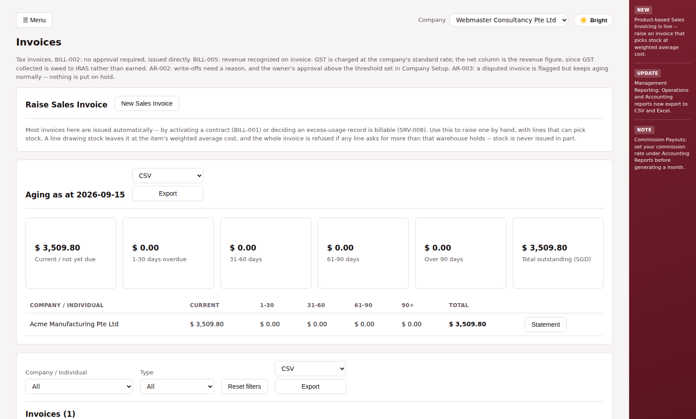
Sales Invoice. Lines appear under the description on a manually raised invoice; the auto-issued ones show none. The GL badge and voucher number sit on every row. BILL-002No approval before issue — invoices are issued directly, which is why there is no draft state. -
Print, Word and Email an invoiceInvoice row actions
The Word button serves a .docx; the Email button converts that same file to PDF and attaches it, so the two can never drift apart.
Expect: Email needs SMTP configured in Company Setup and libreoffice-writer installed on the server. Without LibreOffice the Word download still works while Email fails — a one-sided failure worth checking deliberately.
-
Record a Receipt VoucherAccounts › Receipt Voucher
Money in. Allocate it against one or more invoices by hand — allocation is deliberate, never automatic. Then use the explicit Bank step to mark it banked.
Expect: the invoice moves to partially paid or paid, and the AR aging figure drops accordingly.
-
Write off an invoiceInvoice row actions
Always with a reason.
AR-002The owner always may. Anyone else only below the threshold set in Company Setup — and while that threshold is unset, nobody but the owner can.AR-003Flagging an invoice disputed records the dispute but never holds collections — it keeps aging normally. -
Raise a Purchase OrderAccounts › Purchase Order
Against a Company / Individual flagged as a supplier. Approval follows the same owner / threshold pattern as write-offs.
PUR-001PO approval: owner always; others only below the configured threshold. -
Match a supplier bill against itAccounts › Accounts Payable
Enter the bill, then match. Try it twice: once with amounts that agree with the PO, once with amounts that do not.
PUR-002 / 0032-way matching against the purchase order only. A match auto-approves for payment; a mismatch raises an EXCEPTION spelling out exactly what differs.Expect: auto-approval posts the bill to the GL in the same step. "Confirm and import to AP" brings a PO across without re-keying it.
-
Pay it — Payment VoucherAccounts › Payment Voucher
Money out, the mirror of the Receipt Voucher: allocate against bills, then Bank. Both directions also support Unbank and UNGL.
ACC-004UNGL is a reversal, never a delete — it writes a mirror entry and marks the original reversed. The mistake and the correction both stay on record. -
Raise a manual Journal VoucherAccounts › Journal Voucher
For an adjustment nothing else covers. Enter lines, check it balances, then post.
Expect: an unbalanced voucher is refused whole, writing nothing. Raising a draft needs EDIT; committing it to the ledger needs FULL. A reversal needs a reason.
-
Follow it into the ledgerAccounts › GL Transactions, Chart of Accounts
Open the per-account transaction ledger with its running balance. Trial balance rows drill through to the transactions behind them.
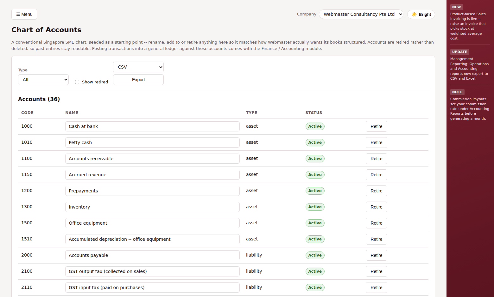
Chart of Accounts. Seeded as a Singapore SME starting point and yours to adjust — this is where you remap where revenue lands. Expect: the trial balance balances. The Company Dashboard reports whether it does, as a tile.
-
Close an accounting periodAccounts › GST and Account Period
Create a period, then use the lock matrix — every document type against every operation, with Close All / Open All and single-cell toggling.
Expect: with a period closed, posting into it is refused. Reopening is owner-only.
-
Run Year-End ClosingAccounts › Year-End Closing
Available only once every period in the fiscal year is closed. It posts one balanced journal entry zeroing every revenue and expense account's movement into a chosen equity account.
-
Work the Accounting ReportsAccounts › Accounting Reports
AR aging, AP aging, trial balance, GST return, Sales GP, and Commission. All with CSV and Excel export.
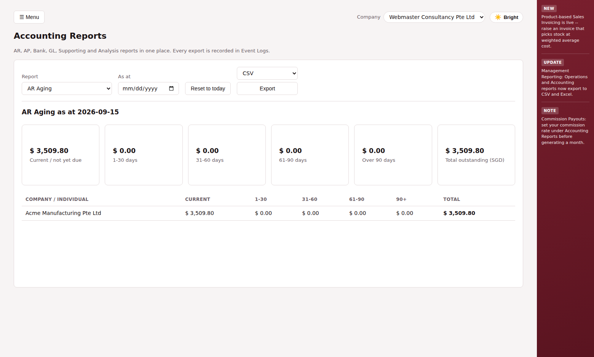
Accounting Reports. AR aging, AP aging, trial balance, GST return, Sales GP and Commission, each with CSV and Excel export. Expect: the aging figures here are the same figures as the AR and AP screens — they call the same code, so they cannot drift. On Sales GP, your stock invoice shows a measured margin; an invoice with no known cost shows no cost rather than a fictitious 100%.
-
Set a commission rate, then run payoutsAccounting Reports › Commission, then Commission Payouts
The rate starts at zero and is never invented — set it first, or the report correctly returns nothing. Then generate a month's payouts, submit, approve and pay.
Expect: generating twice for the same month is refused — cancel the batch first. A paid payout can never be cancelled. Writing off an invoice raises an automatic negative clawback. The batch total matches the Commission report for the same month exactly.
-
Reconcile the Bank BookAccounts › Bank
Bank transactions, voiding with a reason, per-line reconcile and full reconciliation sessions.
| Document | Posted when | Debit | Credit |
|---|---|---|---|
| Sales Invoice | On issue | 1100 Accounts receivable (total) | Revenue (net) · 2100 GST output |
| Supplier Bill | On reaching approved | Expense (net) · 2110 GST input | 2000 Accounts payable (total) |
| Receipt Voucher | On save | Bank GL account | 1100 Accounts receivable |
| Payment Voucher | On save | 2000 Accounts payable | Bank GL account |
Revenue lands by invoice type: 4000 service contract, 4010 excess usage, 4030 hardware sales for a manually raised Sales Invoice. Remap them in the Chart of Accounts if Webmaster wants them elsewhere.
Maintenance tables
Seventeen screens that govern everything above. On a fresh database this is where you start — a tax code has to exist before an invoice can charge GST, and a warehouse before stock can be received.
-
Company SetupMaintenance › Company Setup
Company details and logo, the write-off and PO approval thresholds, Module Control, the financial year start month (Webmaster runs 1 Jul – 30 Jun, labelled by the year it ends in), and the company mailbox.
Expect: two separate mailboxes that never fall back on each other — the system mailbox in .env sends login OTP and password resets (it runs before login, so no company is known yet), while this company mailbox sends customer-facing documents from the right domain.
-
Staff MasterMaintenance › Staff Master
Everyone who can sign in. Create a user with a real role — Owner, Service Lead, Sales Manager, Support Engineer or Finance — and a starting password. Roles are not the same thing as permissions: the role decides who may review a service record or an excess-usage decision, while what a person can open comes from their group.
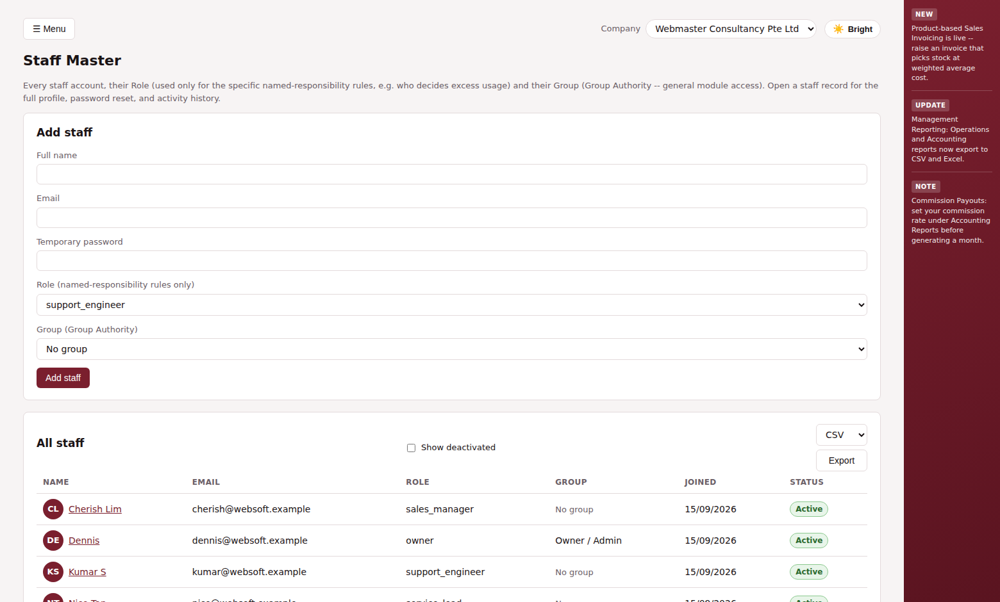
Staff Master. Each user carries a role, a group, and an active flag. Deactivating writes an audit entry; a password reset forces a change at next sign-in. Expect: creating a user needs FULL on Core / Administration. Assigning a group belonging to another company is refused.
-
Group AuthorityMaintenance › Group Authority
Groups hold the permissions. Create one, grant it VIEW on a single module, put your new user in it, and sign in as them.
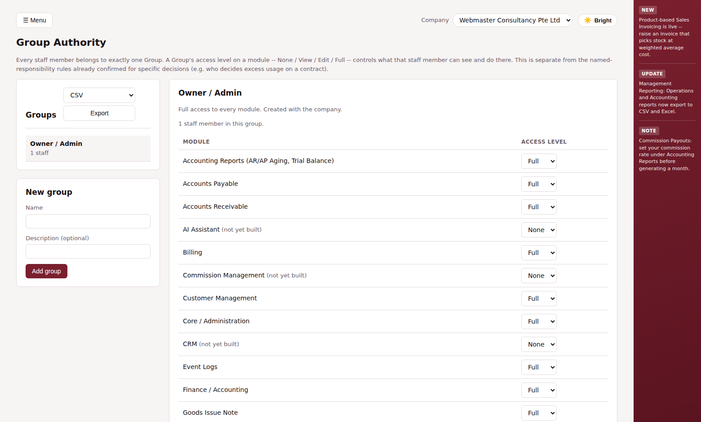
Group Authority. One row per module, one of VIEW / EDIT / FULL. A group with members cannot be deleted — the members have to be moved first. Expect: the menu shrinks to what they hold, and a direct URL to a module they lack returns 403. This is the only reliable way to test permissions — the owner deliberately bypasses Module Control so they can never be locked out of their own system.
-
Tax TypesMaintenance › Tax Types
The GST codes. SR standard-rated at 9% is what every invoice and quotation applies. GST is charged once on the invoice total, not per line.
-
Document ControlMaintenance › Document Control
The running-number counters and each document kind's number format — prefix, digits, whether the year is included.
Expect: both are FULL-only and both require a reason recorded to Event Logs. A format change only ever affects numbers issued from that point on — never renumbers history.
-
Walk the remaining tablesMaintenance menu
Each governs a dropdown or a rule used elsewhere:
- Product Catalog
- Products and services, their prices, and the Job Implementation Template each one carries.
- Chart of Accounts
- The GL accounts every posting lands in. Seeded as a Singapore SME starting point, yours to adjust.
- GL Types
- Optional reporting sub-classification on an account.
- Reference Monitor
- Reference codes, pre-fillable from a product's default onto a quotation line.
- Currency Rate Table
- Rates for reporting. SGD is the base throughout.
- Setup Lists
- Nationality, Country, State, Area Code, Currency, Industry — global, not per company, since a country's name does not differ by company.
- Approval Authority
- eApproval rules and the people who hold them. Any rejection rejects the whole request immediately.
- Announcements & Ad Banner
- The notice on the Login page and on every page after sign-in.
- Warehouses
- Where stock is held. Needed before any receipt.
- Stock Categories, Groups, Brands / Models, Usages
- The four classification tables behind a stock item.
- Event Logs
- The read-only face of the audit trail. Exporting it is itself audited.
- Data Migration
- ODOO / ZSOFT import: dashboard, modules, import, batch log with roll back. Next step.
-
Data MigrationMaintenance › Data Migration
Brings the old ODOO and ZSOFT data in, module by module, into the Internal Company you choose: upload the Excel file, map its columns, check a dry run, import. Duplicates are linked, not created twice (same UEN or GST no. links automatically; a name-only match waits for Link or Create new). Invoices and receipts arrive as history and post nothing to the ledger.
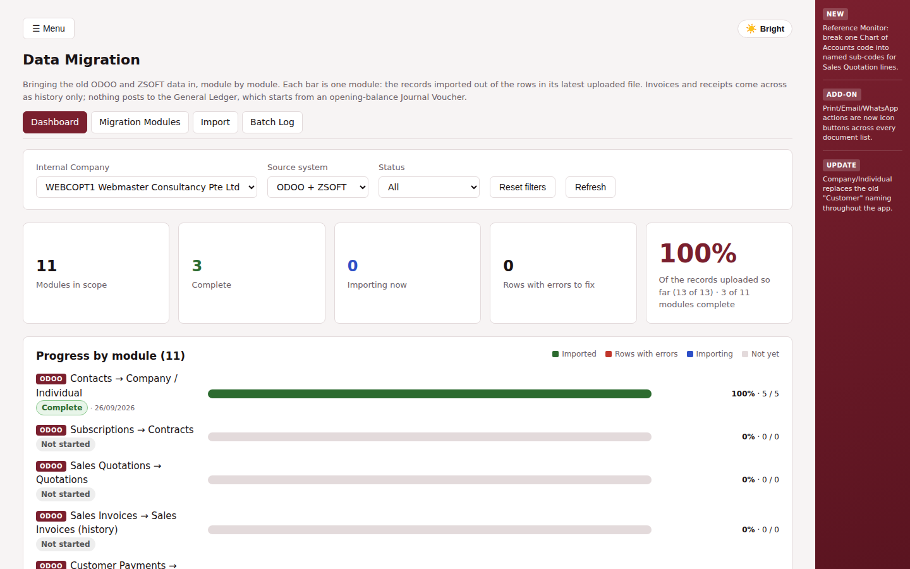
Dashboard. One bar per module, with the records imported and any rows with errors. 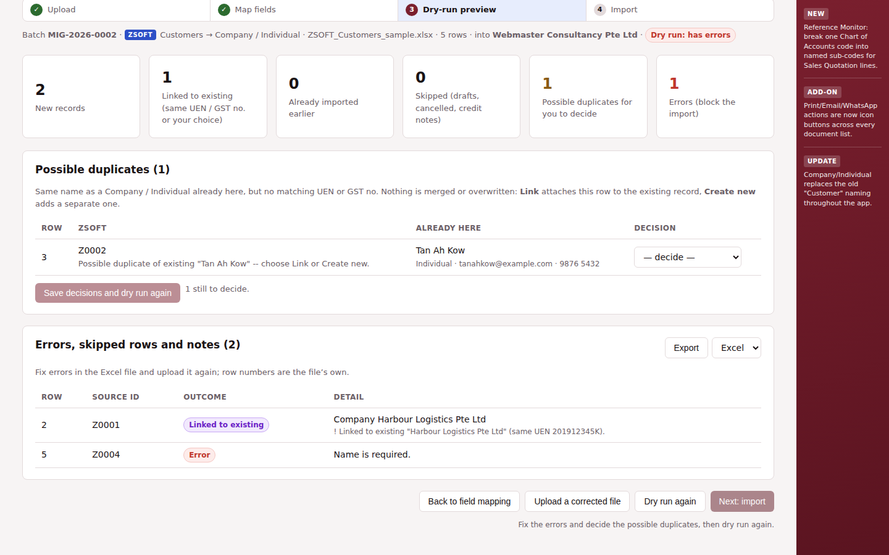
Dry-run preview. Exactly what the import would do, before anything is written. Expect: import stays locked until the module's Field Gap list is signed off and the dry run is clean. A batch can be rolled back while none of its records has been touched since; otherwise the roll back lists what blocks it and removes nothing. Every step is in Event Logs.
-
Finish at the Event LogsMaintenance › Event Logs
Everything you did in stages 1–3 should be here: who, when, what changed, and the reason where one was required. Filter by entity type to follow one document's whole life.
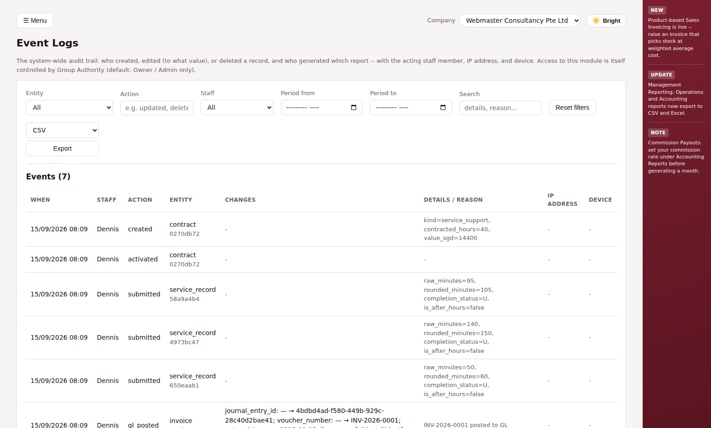
Event Logs. The read-only face of the audit trail — who, when, what changed, and the reason where one was required. Exporting this screen is itself audited. Expect: this is the single best check that the walkthrough worked. If an action you took is missing from the log, that is worth reporting.
| Prefix | Document | Prefix | Document |
|---|---|---|---|
| QUO | Sales Quotation | PO | Purchase Order |
| CON | Service Contract | BILL | Supplier Bill |
| JO | Job Order | PV | Payment Voucher |
| SR | Service Record | RV | Receipt Voucher |
| INV | Sales Invoice | JV | Journal Voucher |
| INC | Incident | BT | Bank Transaction |
| CP | Commission Payout |